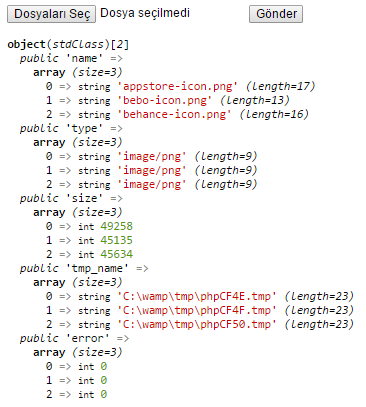

Upload(Dosya Yükleme) Sınıfı
Dosya yükleme işlevini yerine getiren sınıftır. Ayrıca çoklu dosya yüklemenizide olanak sağlarken dosya işlemleri hakkında veya süreçte oluşan hatalar hakkında da bilgi alabilmenizi sağlar.
Upload Kütüphanesini Dahil Etmek
Dosya Yükleme Ayarlarını Yapılandırmak
Dosya ayalarlarını yapılandırmak için kullanılan bu yöntemin bir dizi parametresi vardır. Ayarlar
| Parametre | Anlamları |
|---|---|
| 1. Parametre = Ayarlar | Dosya yükleme ayarları yapılandırılır. |
| Ayarlar Dizisi Parametreleri | Anlamları. |
| [extensions = Tüm Dosyalar] | Hangi uzantılı dosyaların yükleneceğini belirlemek için kullanılır. Kullanım jpg|png|swf. Herhangi bir uzantı seçilmezse her uzantılı dosyayı yüklecektir. |
| [encode = 1] | Yükselenecek dosya ismi şifrelensin mi? Alabileceği değerler: true veya false |
| [prefix = ""] | Yükselenecek dosya ön ek koymak için kullanılır. |
| [maxsize = ""] | Yükselenecek dosyanın byte cinsinden maksimum boyutunu belirlemek için kullanılır. |
| Config/Upload.php Genel Dosya Yükleme Ayarları | Anlamları. |
| [file_uploads = true] | HTTP üzerinden karşıya dosya yüklemeye izin verilip verilmeyeceğini belirler. Alabileceği değerler: true veya false |
| [upload_tmp_dir = "/"] | Karşıya dosya yüklenirken dosyaların geçici olarak saklanacağı dizin. |
| [max_input_nesting_level = 64] | Girdi değişkenlerinin ($_GET, $_POST... gibi) azami iç içelik derinliğini ayarlar. |
| [max_input_vars = 1000] | Kabul edilebilecek girdi değişkenlerinin sayısı. |
| [max_file_uploads = 20] | Aynı anda karşıya yüklenebilecek azami dosya sayısı. |
| [upload_max_filesize = 2M] | Yüklenecek maksimum dosya kapasitesi. |
| [post_max_size = 8M] | POST verisinin azami boyutunu belirler. |
| [max_input_time = -1] | Bir betiğin POST ve GET gibi girdileri çözümlemesi için gereken azami süre saniye cinsinden burada belirtilir. |
| [max_execution_time = 30] | Çözümleyici tarafından sonlandırılmadan önce bir betiğin çalışabileceği azami süreyi saniye cinsinden tanımlar. |
import::library('Upload' ,'Form' );$ayarlar =array ('encode' =>false ,// Dosya isminin şifrelenmesini istemedik. 'prefix' =>'_onek_' ,// Yüklenen dosya isminin önüne _onek_ ibaresinin gelmesini istedik. 'extensions' =>'jpg|jpeg|png|gif|exe' // Sadece yanda verilen uzantılı dosyaları yüklemesini istedik. 'maxsize' =>10 * 1024 // En fazla 10kb boyutunda dosya yüklenebilir. ); upload::settings($ayarlar );
Dosya Yükleme İşlemini Başlatmak
Dosya yükleme işlemini başlatmak için kullanılır 2 parametresi vardır. File Butonun Adı, Dosyanın Yükleneceği Hedef Dizin
| Parametre | Anlamları |
|---|---|
| 1. Parametre = File Buton Adı | Form aracı olan input file nesnesinin adı. |
| 2. Parametre = [Hedef Dizin = Views/Trinkets/Uploads] | Dosyanın yükleneceği hedef dizin. |
import::library('Upload' ,'Form' );$ayarlar =array ('encode' =>false ,// Dosya imini şifrelemesini şirelemesini istemedik. 'prefix' =>'_onek_' ,// Yüklenen dosya isminin önüne _onek_ ibaresinin gelmesini istedik. 'extensions' =>'jpg|jpeg|png|gif|exe' // Sadece yanda verilen uzantılı dosyaları yüklemesini istedik. ); upload::settings($ayarlar ); upload::start('dosya' );// Varsayılan Dizi Yolu: Views/Trinkets/Uploads. echo form::open('form' ,array ('enctype' =>'multipart' ));echo form::file('dosya' );echo form::submit('yukle' );echo form::close();/* Views/Trinkets/Uploads/_onek_resim.jpg */
Çoklu dosya yüklemek için file nesnesini aşağıdaki gibi düzenleyin.
File aracının name değerine [ ] sembollerini eklerken multiple=>multiple özelliğini ilave ettik. Artık çoklu dosya yükleyebiliriz.
Dosya Yükleme İşlemleri Hakkında Bilgi Almak upload::info()
Dosya işlemleri sırasında dosya hakkında bilgi almak için kullanılır herhangi bir parametresi yoktur ancak verileri object veri tipinde döndürür.
import::library('Upload' ,'Form' );$ayarlar =array ('encode' =>false ,// Dosya imini şifrelemesini şirelemesini istemedik. 'prefix' =>'_onek_' ,// Yüklenen dosya isminin önüne _onek_ ibaresinin gelmesini istedik. 'extensions' =>'jpg|jpeg|png|gif|exe' // Sadece yanda verilen uzantılı dosyaları yüklemesini istedik. ); upload::settings($ayarlar ); upload::start('dosya' );echo form::open('form' ,array ('enctype' =>'multipart' ));echo form::file('dosya[]' ,'Dosya Yükleme' ,array ('multiple' ));echo form::submit('yukle' );echo form::close();var_dump (upload::info());/*  */
Sadece yüklenen dosyaların boyutları hakkında bilgi istemis olsaydık info yöntemini upload::info()->size şeklinde yazacaktık.
Dosya Yükleme İşlemleri Sırasında Ortaya Çıkan Hataları Öğrenmek upload::error()
Dosya işlemleri sırasında ortaya çıkan hatalar öğrenmek için kullanılır string türünde değer döndürür.
import::library('Upload' ,'Form' );$ayarlar =array ('encode' =>false ,// Dosya imini şifrelemesini şirelemesini istemedik. 'prefix' =>'_onek_' ,// Yüklenen dosya isminin önüne _onek_ ibaresinin gelmesini istedik. 'extensions' =>'jpg|jpeg|png|gif' // Sadece yanda verilen uzantılı dosyaları yüklemesini istedik. ); upload::settings($ayarlar ); upload::start('dosya' );echo form::open('form' ,array ('enctype' =>'multipart' ));echo form::file('dosya' );echo form::submit('yukle' );echo form::close();echo upload::error();/* ornek.exe adlı dosyayı yüklemeye çalıştığımızı kabul edersek. Geçersiz dosya uzantısı! hatasını alırız. */